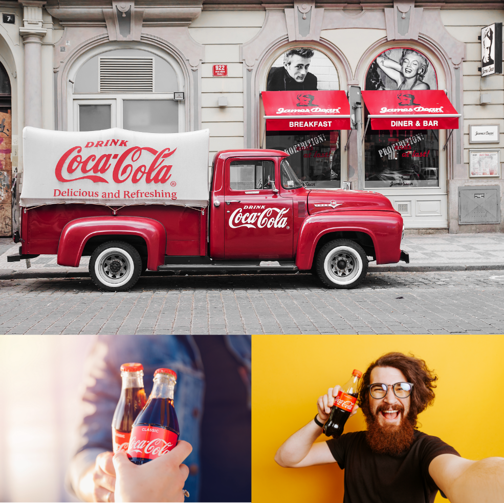
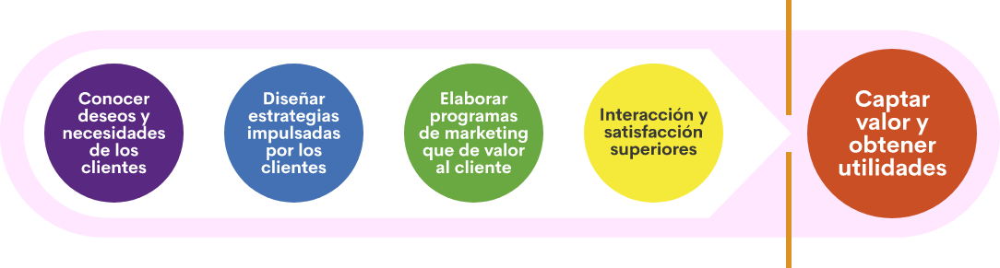
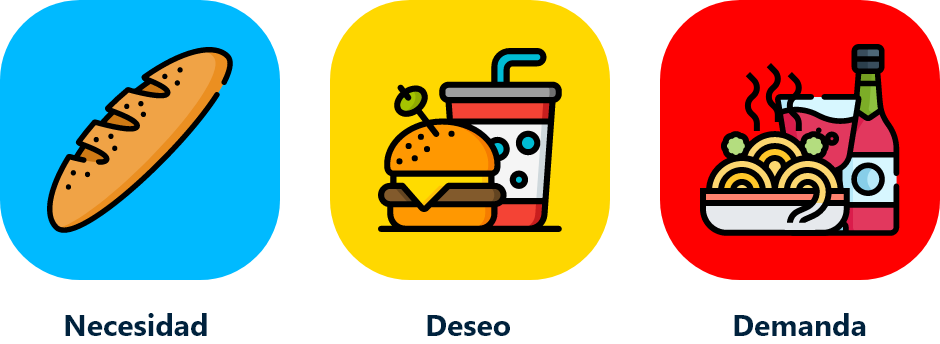
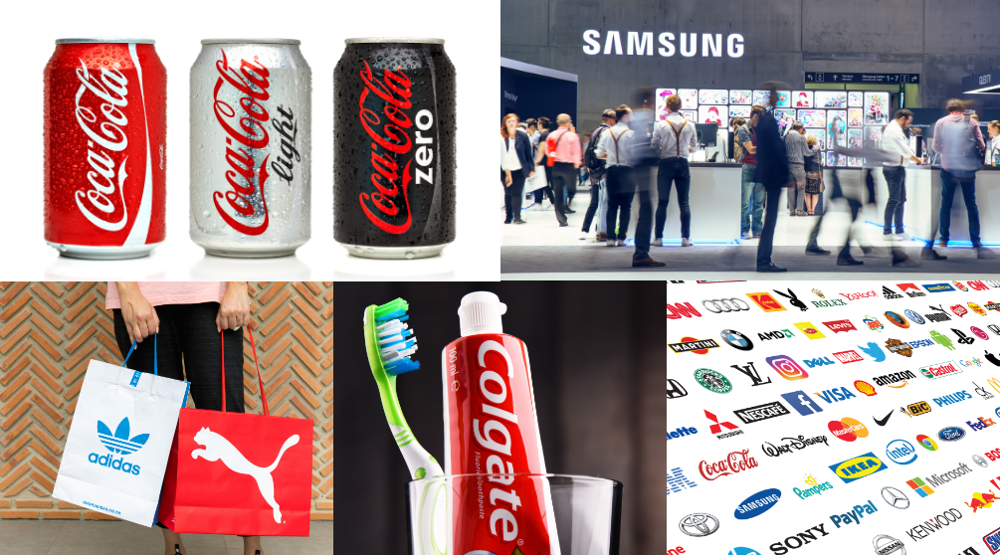

Introducción
El aprendiz apropiará conocimientos de la normativa del proceso ECCL y reconocerá los referentes de evaluación de acuerdo con lineamientos del organismo certificador.
El Servicio Nacional de Aprendizaje- SENA, mediante el Artículo 12, del Decreto 249 de 2004, es el responsable en Colombia de evaluar y certificar las competencias laborales de los colombianos y a través del Artículo 19 del Decreto 933 de 2003 está autorizado para evaluar y certificar las competencias laborales: "El Servicio Nacional de Aprendizaje-SENA regulará, diseñará, normalizará y certificará las competencias laborales”. Este proceso se ha convertido en una importante herramienta para que el sector productivo identifique las brechas de cualificación de los trabajadores y así pueda definir e implementar políticas y estrategias para el desarrollo y gestión del talento humano.El proceso gestión de certificación de competencias laborales, se diseña desde la Dirección del Sistema Nacional de Formación para el Trabajo - DSNFT y se ejecuta en los Centros de Formación del SENA a nivel nacional.
1. Marketing
1.1 ¿Qué es el marketing?
Existen varios conceptos que pueden definir el mercado, cada uno de ellos con variables muy particulares en relación con el tema; sin embargo, con puntos en común.
Para la AMA (American Marketing Asociation) el marketing es una forma de organizar un conjunto de acciones y procesos a la hora de crear un producto “para crear, comunicar y entregar valor a los clientes y para manejar las relaciones” y su finalidad es beneficiar a la organización satisfaciendo a los clientes.
Por su parte, Phillip Kotler, indica que el marketing es un proceso social y administrativo mediante el cual grupos e individuos obtienen lo que necesitan y desean a través de generar, ofrecer e intercambiar productos de valor con sus semejantes.
Mientras que la RAE define el marketing como un conjunto de operaciones por las que ha de pasar una mercancía desde el productor al consumidor.
Todas ellas tienen en común el enfoque en la producción y comercialización de bienes y servicios; sin embargo, el marketing va más allá de eso. En la definición de Kotler se puede observar como hace énfasis en lo social, aludiendo claramente que el mercadeo tiene un enfoque en el ser; es decir, en el consumidor. La AMA por su parte enfatiza en la propuesta de valor, elemento fundamental en el proceso de mercadeo, aunque el aspecto más importante a resaltar es la “satisfacción de necesidades”. Se podría decir entonces que el marketing, mercadeo o mercadotecnia es un conjunto de actividades que se encargan del estudio de un mercado, con el fin de identificar necesidades, gustos o deseos para satisfacerlos a través de bienes o servicios que den al cliente beneficios que obtienen utilidades para la empresa.
El marketing está presente en muchos escenarios de la vida de los seres humanos: la publicidad, las ventas, las promociones y ofertas, la comercialización, la canasta familiar. En un sistema capitalista que basa su economía en la producción y el consumo, la mercadotecnia es parte fundamental de la vida y es indispensable para el desarrollo laboral, personal y social. El marketing permite que las marcas anuncien sus productos y que los clientes reales o potenciales se enteren de su existencia, en ese orden de ideas no solo es un proceso de comercialización sino también de información comercial.
Para algunos expertos el mercadeo tiene como función principal la producción y comercialización de bienes y servicios en torno a la satisfacción de necesidades. Para quienes ven el mercadeo de forma estratégica su principal función radica en el conocimiento profundo y absoluto de los consumidores: gustos, deseos, estilo de vida, intereses, pensamiento, comportamiento y actitud frente a la compra y consumo. Desde un punto de vista más holístico el marketing cumple con todas esas funciones o debería hacerlo; es decir, una empresa que implemente un proceso de mercadeo integral debe comenzar con el análisis del mercado para lograr un absoluto conocimiento de sus clientes y consumidores, pasando por el desarrollo de productos y servicios con propuestas de valor claras y con beneficios sólidos hasta el desarrollo de todo el proceso de comunicación con sus clientes y consumidores.
1.2 Variables del marketing
Las variables del marketing se han estudiado anteriormente; sin embargo se listarán, para tener un panorama nítido de ellas y de los elementos que el mercadeo debe tener claro para el desarrollo de las estrategias:
1.2.1 Variables externas
También llamadas no controlables; es decir, son aquellos factores sobre los que la empresa no tiene dominio, y por ende para los cuales tendrá que desarrollar estrategias que permitan contrarrestar sus efectos a través de acciones realizadas con las variables controlables. Las variables externas o no controlables más comunes son:
El consumidor
La tecnología
El medio ambiente
La economía
Las leyes
La competencia
Los intermediarios
1.2.2 Variables internas
También llamadas variables controlables; estas se encuentran bajo el dominio y manejo de la empresa y permiten desarrollar estrategias enfocadas en la satisfacción total de los clientes y consumidores, generando atracción hacia el producto, servicio o marca. Las variables controlables también permiten contrarrestar los efectos de las no controlables o externas; por ejemplo, con la pandemia del año 2020 con la llegada de la COVID-19, varias empresas debieron realizar estrategias de mercadeo para contrarrestar los efectos que el confinamiento y la cuarentena les produjo desde el punto de vista económico, fue así como muchas empresas debieron implementar estrategias de distribución de sus productos basadas en las entregas a domicilio, otras debieron crear nuevos portafolios de productos o servicios que se adaptaran más a un nuevo sistema de comercialización o satisficiera otras necesidades de sus clientes. Por su puesto, las empresas deberían tener planes de contingencia para este tipo de eventos, no obstante, la pandemia del COVID-19 tomó por sorpresa, incluso a las más grandes y organizadas.
Las variables internas tienen un enfoque más estratégico, ya que se agrupan en el marketing mix también conocido como 4P’s o mezcla de mercadeo.
Marketing mix
La mezcla de mercadeo o marketing mix, conformado por las 4P’s del mercado: producto, precio, plaza y promoción, es un conjunto de elementos que se conjugan entre sí para el desarrollo de estrategias de comercialización y promoción que permitan llegar al mercado objetivo con el producto o servicio y con la información de este para satisfacer sus necesidades y deseos por encima de empresas o marcas de la competencia. Según Kotler y Armstrong citados por Thompson (2005), la mezcla de mercadeo “es todo lo que la empresa es capaz de hacer para influir en la demanda de su producto”. En esta mezcla se pueden encontrar cuatro variables principales, cada una de ellas con una serie de subvariables que se deben tener en cuenta para el desarrollo del plan de mercadeo y el diseño de las estrategias.
El producto:
es la combinación de bienes y servicios que la compañía ofrece al mercado meta y contiene las siguientes subvariables:
Variedad
Calidad
Diseño
Características
Nombre de marca
Empaque
Servicios
El precio:
es la cantidad de dinero que los clientes tienen que pagar para obtener el producto. Esta variable contiene las siguientes subvariables:
Precio de lista
Descuentos
Bonificaciones
Periodos de pago
Planes de crédito
La plaza:
incluye las actividades de la compañía que hacen que el producto esté a la disposición de los consumidores meta. Subvariables:
Canales
Cobertura
Ubicaciones
Distribución
Inventario
Transporte
Logística
La promoción:
implica actividades que comunican las ventajas del producto y persuaden a los clientes metas de que lo compren. Subvariables:
Publicidad
Propaganda
Promoción de venta
Relaciones públicas
Venta personal
Marketing directo
1.3 Proceso de marketing
El marketing tiene un proceso definido que permite a las empresas el desarrollo de estrategias oportunas para la satisfacción de las necesidades de los consumidores. Este proceso debería ser invariable toda vez que seguirlo permite llegar a resultados más contundentes, se disminuye el riesgo o se hacen ajustes más oportunos. A continuación, se indican los pasos a seguir en el proceso de mercadeo:
Identificación: cuando un producto llega al mercado y consigue posicionarse y mantenerse en él, es debido a varias alternativas:
Oportunidad en el mercado:
existen productos o servicios que se crean debido a oportunidades del mercado en las que es evidente u obligatorio la satisfacción de una necesidad; por ejemplo, la llegada del invierno es una oportunidad para la venta de paraguas o la pandemia del COVID-19 fue una para la venta de productos de protección y aseo como mascarillas, jabones y alcohol.
Necesidades:
la identificación de necesidades en un mercado implica el desarrollo de investigación y análisis exhaustivos que permitan ahondar en los gustos y deseos de los consumidores, las necesidades no son solo aquellas carencias básicas del ser humano, también se pueden definir como los deseos, intereses y demandas que una persona o grupo presentan en determinado momento o para un fin específico.
Producto innovador:
es un paso que se da en muy pocas ocasiones, en la actualidad con mucho menos frecuencia; sin embargo, aún se dan casos de productos que suelen ser muy innovadores y no se han generado para la satisfacción de una necesidad en particular; aunque, es necesario hacer la salvedad que todo producto o servicio satisface una necesidad del mercado. Es el caso de Facebook, donde esta red social fue creada con fines muy diferentes a los que tiene en la actualidad, pero por su carácter de innovador le representó convertirse en un servicio mundialmente conocido y utilizado por miles de millones de personas de los cinco continentes.
Investigación: si bien el paso anterior implica realizar un proceso de investigación, es después de la identificación de la necesidad o la oportunidad del mercado, que se comienza el verdadero proceso investigativo e implica analizar el mercado desde varios frentes:
Mercado objetivo:
la empresa debe conocer con todo detalle los clientes potenciales y reales de su producto o servicio, con el fin de tener bases sólidas en el desarrollo de las estrategias de marketing y promoción; cuando se conoce al consumidor en detalle, el nivel de acierto en el diseño de productos, selección de canales de distribución, asignación del precio y diseño de mensajes publicitarios y promociones, es muy alto.
Investigación y desarrollo:
el desarrollo de un producto implica un proceso muy arduo de investigación, es necesario que el empresario conozca los procesos de producción, las materias primas más adecuadas, el diseño del producto, el concepto del mismo, entre otras cosas.
Benchmarking:
la competencia siempre existe, ya sea de forma directa o indirecta, es por eso un paso muy importante el análisis de los productos o servicios que existen en el mercado y que son iguales a los de la empresa o satisfacen la misma necesidad, esta información puede generar datos muy importantes en cuanto diseño de productos, desarrollo de estrategias de precio, distribución y promoción. Se puede decir que es posible hacer un análisis del recorrido que han realizado los competidores para hacer posibles correcciones o realizar estrategias similares.
Entorno:
el mercado es muy amplio desde el punto de vista de las variables, es por ello que uno de los procesos a investigar es el entorno que rodea la empresa; allí se pueden conocer datos muy relevantes de la industria, la normatividad que aplica para el producto o servicio que se está desarrollando, los posibles obstáculos o ventajas que este puede tener.
Plan de marketing: una vez se ha realizado la investigación, la empresa ya está lista para el desarrollo del plan de marketing, en este punto es necesario aplicar el marketing mix; es decir, hacer la combinación de variables controlables con el fin de llevar el producto o servicio de la forma más adecuada y oportuna al mercado objetivo. El plan de marketing se profundizará más adelante.
Monitoreo: el monitoreo o monitorización es una parte fundamental del proceso de mercado, este determina que tan efectivo ha sido el plan y si se están cumpliendo los objetivos planteados. El monitoreo debe hacerlo una persona externa a través del análisis de los indicadores de gestión que se hayan planteado, esto garantiza que se realicen los ajustes que se requieran o continuar aplicando las estrategias en el caso que estén mostrando resultados por encima de la meta propuesta.
1.4 Creación de valor para el cliente
Cómo ya se mencionó anteriormente, la razón principal por la que un cliente compra o prefiere un producto por encima de otro de la competencia, es la propuesta de valor; es decir el beneficio que ese producto o servicio le proporcione al cliente o consumidor. Vale recordar en este momento que el precio del producto debe ser menor al beneficio percibido por el cliente.
Las empresas que desarrollan su estrategia de producto partiendo de una propuesta de valor efectiva y auténtica, tienen todas las posibilidades de lograr un posicionamiento en el mercado que les permita sostenibilidad a mediano o largo plazo. Por ejemplo, la marca registrada Coca Cola siendo un producto con más de 100 años en el mercado, con una historia llena de altibajos, competidores directos, indirectos y hasta imitadores, se ha mantenido vigente gracias a su propuesta de valor; Coca Cola por su naturaleza y características de producto debería ofrecer frescura, saciar la sed o acompañar las comidas, pero en contra de toda lógica ofrece felicidad y es en torno a ella que desde hace varios años ha persuadido a millones de consumidores en todo el mundo de seguir prefiriéndolos por encima de otras bebidas, pese a campañas difamatorias y mitos que se han generado en torno a la bebida más consumida del planeta.
Proceso de creación de valor:
Figura 1 - Proceso de creación de valor
Fuente: SENA (2020)
Como se puede observar en la figura, la creación de valor comienza por la necesidad, los deseos o los gustos presentes en el mercado, para ello es necesario que quien realice la investigación y el análisis sea muy hábil en identificar dichos aspectos del mercado, pues de este punto depende la efectividad del proceso; de allí debe partir el diseño de las estrategias y de la propuesta de valor, la cual debe ser una única propuesta acompañada si se quiere de otros factores diferenciadores o de ventajas que tenga el producto. Sin embargo, una excelente propuesta de valor no es suficiente para el desarrollo del proceso y debe considerarse la comunicación interactiva entre la marca y el cliente, con el fin de informar de manera efectiva y atractiva dicha propuesta a los consumidores reales y potenciales; todo esto debe redundar en la captación de valor por parte del cliente y la generación de utilidades para la empresa.
1.5 El mercado
Hablar del mercado es hacerlo del total de variables que en él existen, tanto las controlables como las no controlables. En el marketing es indispensable tener una visión holística del mercado en función del producto o servicio, cada aspecto de él es importante tenerlo claro para la toma de decisiones; la información de la industria permite determinar proyecciones de ventas y participación, el análisis de la competencia definir posibles tácticas comerciales o de promoción, el estudio de las tendencias identificar las posibles acciones futuras que la empresa debe realizar en cuanto diseño de productos o estrategias de promoción; en fin, todos los datos que del entorno se puedan obtener son una decisión acertada que la empresa puede implementar.
1.5.1 Tipos de mercado
Cada producto o servicio es un mundo aparte y muy particular, para cada uno existen consumidores reales y potenciales con características bien definidas. Es por ello, que existe también una variedad importante de mercados:
Mercado de consumo: es el mercado masivo, aquel que tiene necesidades permanentes y debe satisfacerlas para su supervivencia y bienestar o satisfacción personal. Dentro de él existen dos variaciones de acuerdo con el tipo de producto o servicio:
Consumo inmediato:
se refiere a los productos que se consumen en el momento: una gaseosa o un plato en un restaurante.
Consumo duradero:
aquí se encuentran productos que tienen una vida prolongada y su uso es continuo: los muebles de una casa o un computador.
Mercado de servicios: es el mercado de todos los intangibles, crece cada vez más debido a la demanda de servicios que el mercado ha generado en los últimos años: el servicio de telefonía celular, internet o plataformas de televisión por demanda.
Mercados industriales o institucionales: es una alternativa muy interesante de mercado, las empresas requieren de productos y servicios que otras pueden proveerles. Es un mercado en crecimiento debido a la tercerización de muchos procesos: la publicidad, el desarrollo de software o los servicios de aseo.
Mercados de capitales: se encarga de la compra y venta de títulos valores, acciones y otros activos financieros que las empresas ponen en venta para garantizar su expansión comercial y darle participación a terceros en las empresas como aportantes económicos.
Mercados exteriores: es una modalidad que con la globalización se convirtió en la nueva forma de expandir una marca; actualmente muchas empresas producen de forma exclusiva para compradores extranjeros.
1.5.2 Niveles de necesidad del mercado
Cómo ya se ha dicho en repetidas ocasiones, el mercado tiene varios niveles de necesidades, tal como se verá a continuación, en la pirámide de Abraham Maslow, psicólogo estadounidense:
Figura 2 - Pirámide de Abraham Maslow
Fuente: SENA (2020)
Sin embargo, en todos ellos los niveles de satisfacción están supeditados a la capacidad económica, los gustos, los deseos o los intereses del mercado. Por ejemplo, un producto de primera necesidad es el agua y en el mercado existen diferentes niveles de un producto tan básico como este; está el agua potable que se obtiene del acueducto local y existen marcas que extraen el producto de nacimientos en montañas rocosas en las que se filtra el recurso de forma natural y tiene un alto nivel de aditivos beneficiosos para la salud. Tal vez para la mayoría de personas es suficiente con el agua del grifo, pero para un mercado muy exclusivo con características especiales, es necesario el consumo de agua filtrada naturalmente y para un grupo menos exigente pero que considera el recurso del grifo como de dudosa calidad, el consumo de una marca regular sea suficiente; es allí donde se pueden diferenciar los tres niveles de la satisfacción de necesidades:
Necesidad: en el sentido más básico es la carencia de algo. Una necesidad se puede satisfacer de la forma más básica; por ejemplo, el hambre se puede saciar con un trozo de pan.
Deseo: implica un nivel más alto de satisfacción que la necesidad, este se determina por la cultura y la personalidad; por ejemplo, el hambre se puede saciar también con la satisfacción de un deseo: una hamburguesa con gaseosa.
Demanda: son deseos y peticiones superiores y está totalmente ligado a la capacidad de compra; por ejemplo, satisfacer el hambre y el deseo de consumir algo rico pero demandar aquello que solo unos cuantos pueden pagar, la pizza Luis XIII que tiene un costo superior a los 9000 dólares.
Figura 3 - Niveles de satisfacción de las necesidades
Fuente: SENA (2020)
1.5.3 Estrategias de mercadeo
Penetración de mercados: consiste en incrementar la participación del producto en los mercados que cubre en la actualidad con los productos de su portafolio. Esta estrategia se puede llevar a cabo provocando que los clientes actuales incrementen su consumo o atrayendo a los clientes potenciales del mismo segmento que se encuentren en diferentes áreas geográficas o que no hayan sido captados por la comunicación de la empresa.
Desarrollo de mercados: consiste en llegar a nuevos mercados conservando el producto actual, en cuanto a diseño, empaque y presentaciones. Es el caso de la marca registrada Frisby, que con el mismo modelo de negocio llegó a todas las ciudades de Colombia.
Desarrollo de productos: para desarrollar nuevos productos se requiere de ingenio y de innovación. Las ideas surgen regularmente de las investigaciones que realiza el departamento de trade marketing de la empresa preguntando directamente a los clientes y consumidores. También se generan en los departamentos de investigación y desarrollo de las compañías donde están realizando constantemente pruebas y nuevas recetas. En otras ocasiones surgen de oportunidades del mercado o de ideas espontáneas de empleados o colaboradores de la empresa.
Estrategias de precios: el precio es una de las variables más relevantes para la toma de decisión de compra por parte del cliente e incide en la adquisición de la mayoría de los productos de consumo masivo. Por ello es muy importante desarrollar estrategias adecuadas y oportunas en relación con esta variable, teniendo en cuenta además que, si bien el precio es una variable controlable, tiene algunos límites que se los pone el comprador, la competencia y algunas normas legales. Estas son las estrategias de precios que se pueden realizar:
Fijación de precios mediante márgenes: consiste en añadir un margen estándar al costo del producto. Hay empresas que estiman el precio mediante la “adición” de un margen al costo total del proyecto que proporcionará el beneficio.
Fijación de precios para alcanzar una tasa de rentabilidad: consiste en considerar una determinada “tasa de rentabilidad” estándar para el producto generando variación constante.
Precios de penetración o precios bajos.
Precios altos de desnatado o descreme: esta estrategia es muy seguida por el sector tecnológico, dados los altos costos de innovación, los cuales son cubiertos por el mercado que es poco susceptible al precio.
Distribución intensiva: la empresa busca el mayor número de puntos de venta posible, múltiples centros de almacenamientos para asegurar la máxima cobertura del territorio de ventas y una cifra de ventas elevadas.
Distribución selectiva: se recurre a un número inferior de intermediarios disponibles; es decir solo algunos pueden vender tu producto. Un solo distribuidor recibe el derecho de vender la marca y se compromete a no vender marcas competitivas en la misma categoría.
Distribución selectiva: se recurre a un número inferior de intermediarios disponibles; es decir solo algunos pueden vender tu producto. Un solo distribuidor recibe el derecho de vender la marca y se compromete a no vender marcas competitivas en la misma categoría.
Estrategia de Push “presión o empuje”: consiste en orientar los esfuerzos de comunicación (promoción) a los intermediarios con la finalidad de que promocionen más la marca.
Distribución exclusiva.
Estrategias de Pull “jalón o aspiración”: esta estrategia concentra los esfuerzos de promoción sobre el consumidor final, evitando a los intermediarios. (Cruz, 2009)
Estrategias de comunicación: la comunicación o promoción es una variable muy importante dentro del proceso de mercadeo, de ahí que las empresas subcontraten este servicio a través de agencias de publicidad y en muy pocas ocasiones, sobre todo en grandes industrias creen in house o equipos de publicidad interna. Las estrategias de comunicación requieren altos despliegues de creatividad y planificación, en la actualidad las empresas están desarrollando sus propias estrategias de promoción gracias al acceso a medios masivos sin la necesidad de intermediarios, como es el caso de las redes sociales.
De acuerdo con los Manuales Prácticos de la Mipyme de la Xunta de Galicia (s.f.), se describen las siguientes estrategias de comunicación:
Estrategia global de diferenciación:
las empresas pueden seguir estrategias de diferenciación por atributos tangibles, intangibles, etc. Cada empresa se posiciona en diferentes valores.
Estrategia de asociación:
en contraposición, la estrategia de asociación se refiere a aquella que siguen las empresas que utilizan para identificarse los mismos valores o similares.
Estrategia de marca única o monolítica:
supone poner el mismo nombre a todos los productos que la empresa comercializa y este nombre, puede coincidir o no con el de la empresa. Esta estrategia también recibe el nombre de “marca paraguas”.
Estrategia de marcas múltiples o marquista:
la empresa no existe para el usuario y es el producto el que manda.
Estrategia de marcas individuales:
consiste en poner un nombre distinto a cada uno de los productos comercializados por la empresa.
Publicidad exterior:
se trata de un medio específicamente publicitario, impreso y conceptual. Es susceptible de adoptar todo tipo de formas y está situada siempre en la calle o en lugares de gran afluencia de público. Las características más importantes son:
Estrategia de segundas marcas:
son marcas que pertenecen a fabricantes que tienen en el mercado otras marcas de más prestigio.
Estrategia de marcas apropiadas o de endoso:
la marca es individual, pero recibe el respaldo de una marca establecida. Esto produce que la marca esté apoyada por el prestigio de la marca establecida.
Estrategia Above The Line (ATL):
estrategia que implica el empleo de medios tradicionales o convencionales para publicitar la oferta y los mensajes de la empresa. Se trata de una estrategia que utiliza medios masivos para llegar al mayor número de público objetivo. Entre los medios masivos se encuentran: la televisión, radio, prensa y la publicidad exterior.
Estrategia Below The Line (BTL):
el empleo de esta estrategia se centra en utilizar medios no convencionales, que se caracterizan por ser menos masivos y más directos. Algunos de ellos son: las relaciones públicas, internet, marketing directo, promociones, etc.
Estrategias 360º:
se basan en la utilización de una combinación de medios publicitarios masivos y no masivos. (p. 68-72)
1.6 Plan de marketing
Una vez estudiados los elementos relacionados con el marketing, es necesario compilar toda la información y las estrategias en un plan. La organización de la información permite el direccionamiento de las acciones con fines particulares. Por ello, un plan de mercadeo incluye varios pasos:
Resumen ejecutivo: este resumen si bien encabeza el plan de marketing, por lo general se realiza al final del plan; sirve de introducción al documento para que quienes interactúen con él y comprendan en términos generales la finalidad del mismo.
Análisis del mercado: es un análisis de todas las variables que conforman el mercado que está en torno a la marca, con el fin de tener un panorama amplio de la situación de la empresa.
Segmentación del mercado: incluye el desarrollo de la identificación del mercado potencial, real y de los nichos; en este punto se debe tener la información cuantitativa y cualitativa que permita la proyección en producción, ventas y distribución, así como la planeación de estrategias de comunicación y promoción de ventas.
Análisis de tendencias: el desarrollo de un producto, el diseño de las estrategias de distribución, el diseño de marca y empaque, entre otros elementos, requieren estar a la vanguardia, con el fin de identificar al mercado objetivo.
Análisis de la empresa, de los productos y/o servicios: si bien el plan de mercadeo es de dominio de la empresa, es importante incluir una descripción de ella y el producto(s) o servicio(s) para los que se va a realizar el plan de marketing; esto permite a participantes externos y colaboradores, así como a la agencia de publicidad, que participe en el proceso de conocerlos al detalle.
Análisis de la competencia: este es un punto muy importante para el desarrollo del plan, la competencia a pesar que hace parte las variables externas “analizadas anteriormente”, debe dedicársele un análisis aparte. En este punto es necesario analizar a todos los posibles competidores en cuanto a sus estrategias de precio, distribución y promoción, así como un análisis detallado del producto o servicio, diseño, composición, protocolo de prestación y propuesta de valor.
Diseño de matrices de diagnóstico: es un punto ya visto en anteriores componentes formativos; aquí es necesario aplicar las variables para permitir la toma de decisiones en cuanto a las estrategias de marketing:
Matriz DOFA
Matriz de perfil competitivo
Matriz de posicionamiento
Matriz del grupo consultor de Boston
Matriz de Ansoff
Plan estratégico: es un compendio de los objetivos, estrategias y actividades relacionadas con las estrategias a implementar, para llevar el producto o servicio a las manos de la mayor cantidad de consumidores y satisfacer sus necesidades, deseos o demandas. Incluye:
Diseño de objetivos de ventas, mercadeo y promoción.
Diseño de estrategias de mercadeo: producto, precio y distribución.
Diseño de estrategias de comunicación.
Presupuesto.
El plan de marketing finalmente debe ser socializado para su aprobación por parte de los directivos de la empresa, quienes avalan el presupuesto planteado para el mismo.
Glosario
Analítica web:es la forma de medir y analizar los datos de tráfico de un sitio web, a través del cual nos va a permitir tomar las mejores decisiones y optimizar los objetivos del negocio.
Blog post: es el nombre técnico que recibe la acción de publicar una entrada o un artículo en un blog.
Comunidad online: conjunto de personas con presencia en medios digitales y redes sociales que comparten y dialogan en el entorno 2.0, generalmente en torno a una marca o temática.
Cookies: son pequeños fragmentos de información que quedan registrados en el navegador cuando se visita un sitio web y que permiten a este sitio seguir el rastro de la actividad de los usuarios.
Crowdsourcing: acción por la cual las empresas y marcas generan contenido creativo a través de los propios clientes, fans o usuarios de internet. Este término se ha generalizado y puesto en práctica sobre todo para fomentar la participación en redes sociales.
Engagement: es la sensación de pertenencia y unión emocional entre una marca y un usuario. Es el objetivo de toda marca o empresa en redes sociales a través de basar la estrategia en marketing de contenidos y generar en cada una de las redes la mayor participación posible.
Fanpage: también llamada “página de fans”, es la plataforma que ofrece Facebook a las empresas, marcas u organizaciones para visibilizar y conectar con los usuarios. A diferencia de un perfil, una fan page no tiene límite de fans y es posible tener acceso a la información estadística de la página.
Geolocalización: término que hace referencia al posicionamiento y a la localización geográfica de un negocio, una persona o un lugar a través de coordenadas que permite situar cualquier elemento en el mapa. Es una herramienta fundamental para aplicaciones y comercial a través del mobile marketing.
Hashtag: es una etiqueta formada por una palabra o un conjunto de palabras precedidas por el símbolo numeral (#) que transmite una idea, un nombre o un concepto que normalmente va asociado con un mensaje o texto. Su uso se ha extendido principalmente en redes sociales como Twitter, Instagram o Google Plus.
Influenciador: en social media es aquella persona que tiene capacidad para viralizar y compartir contenidos con un amplio número de personas.
KPI: son las siglas de Key Performance Indicator; son indicadores y herramientas de medición de los cuales se obtiene información útil del nivel de rendimiento de una campaña o estrategia de social media marketing.
Marketing de contenidos: son estrategias de marketing enfocadas en ofrecer contenidos útiles y de ayuda a los usuarios principalmente a través del blog y del social media marketing.
Reputación online: es el conjunto de opiniones y experiencias (positivas o negativas) de usuarios y consumidores que giran en torno a una marca, un producto o una empresa, generados en el entorno 2.0 y en las redes sociales.
ROI: son las siglas en inglés de Return On Investment, que significa retorno de la inversión. Es un indicador que mide el beneficio frente al gasto de la inversión de un proyecto de social media marketing en función de los objetivos y las metas logrados.
Segmentar: en redes sociales, es la acción por la cual se dirige una publicación a un grupo de personas con un perfil determinado. Se utilizan variables demográficas, pero las conductuales se convierten en las más relevantes porque determinan el comportamiento de los usuarios al interior de la red. Las marcas y empresas usan la segmentación en Facebook para aumentar la efectividad de la publicación entre su público objetivo.
Viral: un contenido viral, del tipo que sea, es aquel que se difunde y se comparte como la pólvora entre diferentes usuarios y a través de diferentes medios y redes sociales. El objetivo de cualquier campaña de marketing es “viralizar” sus contenidos.
Webinar: también llamados webinar, son eventos o conferencias que tienen lugar en el medio online. Es una muy buena estrategia para enganchar nuevos seguidores en las redes sociales.
Material complementario
| Autor, (año del documento o material), Nombre del documento o material. | Tipo de material ( Video, capítulo de libro, articulo, otro) | Enlace del Recurso o Archivo del documento o material |
|---|---|---|
| SENA. (2020). Adaptado de Manuales prácticos de la Mipyme: Como Elaborar el Plan de Comunicación. (s.f.). Ejemplo Plan de Comunicación. | Documento PDF | Descargar |
Referencias bibliográficas
Benítez, M. (2019, mayo 27). Diccionario de Marketing Digital. MKT2U.Com.https://communitymanager2u.com/blog-diccionario-de-marketing-digital/
Cibrián, B. I. (2018). Marketing digital. Mide, analiza y mejora. ESIC Editorial.
Coll, P. y Micó, J. L. (2018). Marketing y Comunicación en la Nueva Economía. Editorial UOC.
Cruz, J. (2009, abril 10). Cómo aplicar el Marketing. Estrategia de Marketing para Distribución.http://estrategias-negocio.blogspot.com/2009/04/estrategia-marketing-distribucion.html
Davara, A. M. (1992). Estrategias de Comunicación en Marketing. Edit. DOSSAT S.A.
Estrella, A. M. y Segovia, C. (2016). Comunicación Integrada de Marketing. ESIC EDITORIAL
La Botica Creativa. (2015). Community Manager. ICB, SL. Interconsulting Bureau S.L.
Monserrat, J. y Sabater, F. (2017). Planificación Estratégica de Comunicación en Redes Sociales. Editorial UOC
Roldán, Z. S. (2016). Community Management 2.0: Gestión de Comunidades Virtuales. ECOE Ediciones.
Sainz de Vicuña, J. M. (2018). El Plan de Marketing Digital en la Práctica. ESIC Editorial.
Serrano, J. (2015). SEO, Introducción a la Disciplina del Posicionamiento en Buscadores. Editorial UOC.
Silva, H., González, J., Martínez, D., Giraldo, M., Juliao, D. y Ortiz, M. (2014). Marketing, Conceptos y Aplicaciones. Ediciones de la U.
Thompson. I. (2005, agosto). La Mezcla de Mercadotecnia. PromonegocioS.net.https://www.promonegocios.net/mercadotecnia/mezcla-mercadotecnia-mix.htm
Vila, F. (2013). Comunicación Estratégica. Barcelona. Editorial UOC. Madrid. ESIC Editorial.
Xunta de Galicia. (s.f.). Manuales prácticos de la Mipyme: Como Elaborar el Plan de Comunicación.http://biblioteca.udgvirtual.udg.mx/jspui/bitstream/123456789/1919/1/Como%20elaborar%20el%20plan%20de%20comunicaci%c3%b3n.pdf
Fotografías y vectores tomados de https://www.shutterstock.com/ y https://www.freepik.es/
Licencia Creative Commons
CC BY-NC-SA
Ver licencia.